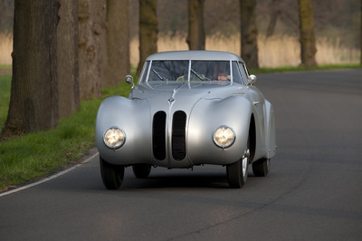

Stari modeli
domov
o nas
Življenjepis
Rojstvo
Zgodovina
Vozila
Stari modeli
Novi modeli
Športni modeli
ostalo
dnevnik
Drive On!
Stari modeli BMW
BMW ima bogato zgodovino avtomobilskih modelov, ki so pustili neizbrisen pečat v avtomobilski industriji. Njihovi starejši modeli predstavljajo temelje današnje prepoznavnosti blagovne znamke.
Od prvega avtomobila Dixi do legendarne serije 2002, so stari modeli BMW prepoznani po kakovosti, napredni tehnologiji in brezčasni obliki.
Vsak star model ima svojo zgodbo, svoj vpliv in svojo vlogo v razvoju BMW kot vodilnega proizvajalca športnih in luksuznih vozil.
Ikonični Modeli
BMW Dixi (1928) je bil prvi avtomobil podjetja in začetek BMW-jeve avtomobilske poti. Temelji na licenci britanskega Austina 7.
BMW 328 iz leta 1936 je legendarni športni roadster, znan po dirkalnih uspehih in aerodinamični obliki.
V šestdesetih letih je serija BMW 1500 – začetnik Neue Klasse – zaznamovala tehnološki napredek in eleganco, ki sta postala standard znamke.
Zgodovina
Začetki
Eleganca

Dirke
Oblikovanje
Ikona
Klasika
Zapuščina
BMW Dixi
Prvi BMW-jev avtomobil iz leta 1928.
BMW 328
Prestižni roadster s športnim duhom.
BMW 1500
Začetek serije Neue Klasse.
BMW 2002
Kultni model, ki je oblikoval športno identiteto znamke.
Tehnična Dediščina
Stari modeli BMW so znani po inovativni tehnični zasnovi, od zadnjega pogona do lahke konstrukcije in napredne aerodinamike.
Njihov vpliv je razviden v sodobnih modelih, saj številne rešitve iz preteklosti še danes oblikujejo vozno izkušnjo BMW.
Zapuščina in Navdih
Klasični modeli BMW služijo kot navdih sodobnim oblikovalcem in inženirjem. Dogodki, kot so Concours d’Elegance, so dokaz trajne privlačnosti teh vozil.
Ljubitelji po vsem svetu obnavljajo in razstavljajo stare modele, ohranjajo njihovo zgodbo živo in občudovano.
Ključni Mejniki Starih Modelov
1928 – BMW Dixi: prvi BMW-jev avtomobil.
1936 – BMW 328: pionir športnega segmenta.
1962 – Serija Neue Klasse z BMW 1500.
1968 – BMW E3 limuzine: začetek luksuznega razreda.
1973 – BMW 2002 Turbo: prvi evropski serijski turbo avtomobil.
Vrednote Klasike
Stari modeli BMW izražajo brezčasno eleganco, vozno dinamiko in tehnično odličnost. So dokaz, da je kakovostna zasnova večna.
BMW ohranja spoštovanje do svoje preteklosti, saj ta še naprej oblikuje prihodnost.